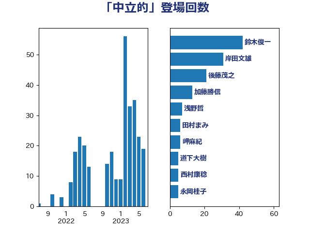

単語「中立的」

| 鈴木俊一 | 自由民主党 | 42 回 |
| 岸田文雄 | 自由民主党 | 31 回 |
| 後藤茂之 | 自由民主党 | 21 回 |
| 加藤勝信 | 自由民主党 | 13 回 |
| 浅野哲 | 国民民主党 | 7 回 |
| 田村まみ | 国民民主党 | 6 回 |
| 岬麻紀 | 日本維新の会 | 6 回 |
| 道下大樹 | 立憲民主党 | 5 回 |
| 西村康稔 | 自由民主党 | 5 回 |
| 永岡桂子 | 自由民主党 | 5 回 |
| 林芳正 | 自由民主党 | 4 回 |
| 斉藤鉄夫 | 公明党 | 4 回 |
| 西村智奈美 | 立憲民主党 | 3 回 |
| 緒方林太郎 | 無所属 | 3 回 |
| 本村伸子 | 日本共産党 | 3 回 |
| 小倉將信 | 自由民主党 | 3 回 |
| 佐々木さやか | 公明党 | 3 回 |
| 階猛 | 立憲民主党 | 2 回 |
| 阿部司 | 日本維新の会 | 2 回 |
| 金子恭之 | 自由民主党 | 2 回 |
| 藤丸敏 | 自由民主党 | 2 回 |
| 芳賀道也 | 国民民主党 | 2 回 |
| 笠浩史 | 無所属 | 2 回 |
| 河野太郎 | 自由民主党 | 2 回 |
| 新藤義孝 | 自由民主党 | 2 回 |
| 徳永久志 | 無所属 | 2 回 |
| 川田龍平 | 立憲民主党 | 2 回 |
| 山際大志郎 | 自由民主党 | 2 回 |
| 山口壯 | 自由民主党 | 2 回 |
| 大口善徳 | 公明党 | 2 回 |
| 和田有一朗 | 日本維新の会 | 2 回 |
| 吉川元 | 立憲民主党 | 2 回 |
| 高良鉄美 | 無所属 | 1 回 |
| 高橋光男 | 公明党 | 1 回 |
| 高橋はるみ | 自由民主党 | 1 回 |
| 青柳仁士 | 日本維新の会 | 1 回 |
| 青山繁晴 | 自由民主党 | 1 回 |
| 野田佳彦 | 立憲民主党 | 1 回 |
| 酒井庸行 | 自由民主党 | 1 回 |
| 赤木正幸 | 日本維新の会 | 1 回 |
| 西田実仁 | 公明党 | 1 回 |
| 舟山康江 | 国民民主党 | 1 回 |
| 竹内譲 | 公明党 | 1 回 |
| 稲津久 | 公明党 | 1 回 |
| 稲富修二 | 立憲民主党 | 1 回 |
| 秋野公造 | 公明党 | 1 回 |
| 福島みずほ | 社会民主党 | 1 回 |
| 田村智子 | 日本共産党 | 1 回 |
| 田嶋要 | 立憲民主党 | 1 回 |
| 田島麻衣子 | 立憲民主党 | 1 回 |
| 田中昌史 | 自由民主党 | 1 回 |
| 田中健 | 国民民主党 | 1 回 |
| 牧山ひろえ | 立憲民主党 | 1 回 |
| 湯原俊二 | 立憲民主党 | 1 回 |
| 渡辺猛之 | 自由民主党 | 1 回 |
| 泉田裕彦 | 自由民主党 | 1 回 |
| 水野素子 | 立憲民主党 | 1 回 |
| 武井俊輔 | 自由民主党 | 1 回 |
| 柴田巧 | 日本維新の会 | 1 回 |
| 枝野幸男 | 立憲民主党 | 1 回 |
| 松沢成文 | 日本維新の会 | 1 回 |
| 松本剛明 | 自由民主党 | 1 回 |
| 末次精一 | 立憲民主党 | 1 回 |
| 平林晃 | 公明党 | 1 回 |
| 平木大作 | 公明党 | 1 回 |
| 山添拓 | 日本共産党 | 1 回 |
| 山口那津男 | 公明党 | 1 回 |
| 山下貴司 | 自由民主党 | 1 回 |
| 寺田稔 | 自由民主党 | 1 回 |
| 大島敦 | 立憲民主党 | 1 回 |
| 大岡敏孝 | 自由民主党 | 1 回 |
| 大家敏志 | 自由民主党 | 1 回 |
| 塩川鉄也 | 日本共産党 | 1 回 |
| 塚田一郎 | 自由民主党 | 1 回 |
| 古川禎久 | 自由民主党 | 1 回 |
| 友納理緒 | 自由民主党 | 1 回 |
| 加田裕之 | 自由民主党 | 1 回 |
| 住吉寛紀 | 日本維新の会 | 1 回 |
| 伊藤渉 | 公明党 | 1 回 |
| 伊藤俊輔 | 立憲民主党 | 1 回 |
| 伊佐進一 | 公明党 | 1 回 |
| 仁比聡平 | 日本共産党 | 1 回 |
| 井林辰憲 | 自由民主党 | 1 回 |
| 井坂信彦 | 立憲民主党 | 1 回 |
| 中谷一馬 | 立憲民主党 | 1 回 |
| 中川正春 | 立憲民主党 | 1 回 |